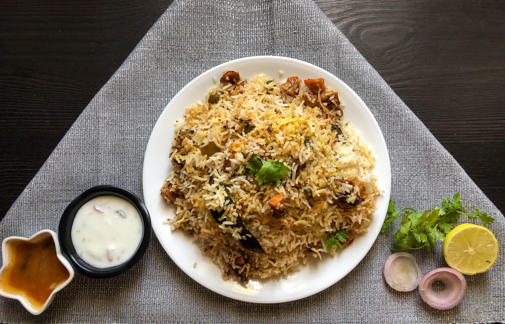

The 2026 ICC Men's T20 World Cup is the tenth edition of the ICC Men's T20 World Cup, co-hosted by Board of Control for Cricket in India and Sri Lanka Cricket from 7 February to 8 March 2026. Sri Lanka had previously hosted the competition in 2012 and India in 2016. A total of twenty teams are competing in 55 matches across five venues in India and three in Sri Lanka.
